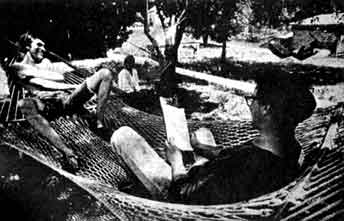
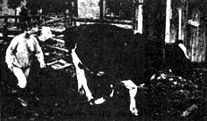
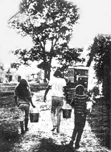

They publish a little booklet titled "The Revolution is Over:We Won!" , or as the subtitle says, "The Radical Commune Approach to Revolution." All of which is a good introduction to the Twin Oaks Community quietly thriving in its third year down in the heart of Virginia. They live on 123 acres of what used to be a tobacco farm - the first year on the place they even raised a crop of the noxious weed under the direction of a friendly local farmer. But now farming gets less attention as their hammock manufacturing industry grows large enough to satisfy much of their "outside" economic needs. When we visited the place there were 13 actual community members along with five or six visitors. These visitors were part of a never-ending stream of people who come to see the new life at Twin Oaks and their presence raises the actual population at Twin Oaks to about 20 people at any given time during the summer. Visitors from the outside, like we two, are very important to the revolution they speak of. For while Twin Oaks was designed to be a living experiment in community, it also aims to stimulate others to do the same. As one member said ". . . we generally hold to the opinion that people who don't start communities (or join them) are slightly immoral." It's all part of the revolution being over - they define revolution as a "radical restructuring" of society, both economic and, more important, cultural. (But maybe you can't really separate the two.) One member summed up a desirable post-revolutionary society as: "a society that creates people who are commited to non-aggression; a society of people concerned for one another; a society where one man's gain is not another man's loss; a society where disagreeable work is minimized and leisure is valued; a society in which people come first; an economic system of equality; a society which is constantly trying to improve in its Many will, of course, dismiss all of this as mere rhetoric claiming that communities are escapist or that, if they ever did become a real threat to society, then society would destroy them. But Twin Oaks people see themselves as only the beginning of what they expect will become a very large movement - a movement of young people forming groups so alternate social structures may be experimented with to find the structures that produce the things that people value. Twin Oaks people will tell you that the size of this movement and its obviously better way of life will make it impossible to repress. You can get the impression - because of the strength of their belief - that some of them even get kind of religious about these notions. But religious or mystical they are not. Their first and foremost belief is that answers to social questions come only from social experimentation and scientific observance of the results of these experiments. They think of philosophers and politicians as being on the same level as religion - dead! The ideas behind Twin Oaks originated in behavioral psychology and the Community is in a great many ways modeled after Psychologist B.F. Skinner's Walden II, which is a description of a fictional utopian society.
Twin Oaks was started by a group of people who met while attending an "academic" conference during 1966, at Ann Arbor, Michigan, on the formation of a Walden Il community. (Former Grinnel Professor George Eastman was a committee chairman of this 1966 meeting.) One of the Twin Oakers related how this conference resulted in a very elaborate, academic type plan on how to get a Walden II community going. But when the conference was over the professors all returned to their teaching posts and nobody had any idea where they would get the several million dollars that the plan called for to start the thing. So, eight people decided to start right away with whatever resources they could get together. One of the original founders had enough money to purchase the farm where they are presently located - he has since left due to a disagreement about the way the community was being run, but he is leasing the farm to the group on a 12-year lease at the end of which time he will deed the farm over to the Community.
Twin Oaks Community either already is, or is working toward, all of the above-hence, the members think of themselves as a post-revolutionary society. ability to create happy, productive, creative people."
Twin Oaks is different than most other rural communes in three important respects: It is not an agricultural subsistence commune; they raise only part of their food - the rest they purchase with money earned by their hammock-making industry. They consider this a more efficient use of time (hence less hours of work) than trying to raise all their own food. Second, Twin Oaks embraces rather than rejects modern technology - their aim is to use technology in every way possible to reduce the per-person work load and enable people to lead more satisfying lives. Twin Oaks is working hard to develop a strong economic base. And third, Twin Oaks is not a religious or drug-mystical community. Rather, it is based on experimentally altering societal structures so as to discover structures that are most satisfying to the people of the community. This process is an ongoing thing which will take into account peoples' changing values - this is especially important for the first transitional generation that will only gradually be able to throw off their previous conditioning by straight society.
Ideas at Twin Oaks are oriented towards an ever-expanding group of people. Twin Oakers hope their own community will grow to encompass a large number of people, perhaps 500 to 1,000. Then other communities will be formed, some by people who have lived at Twin Oaks. All of these communities will hopefully cooperate economically and in other ways. They don't want to be isolationist, rather, they and their counterparts want to eventually have a system of living, government if you will, that can be successfully applied to whole nations of people.
Central to Twin Oaks is the "labor credit" system of dividing labor among the members. Briefly described, the community decides each week how much work and what jobs need to be done. Then people sign up for the jobs they want to do. The number of hours each person must do is determined by dividing the total number of hours of work for that week by the number of people there are to do it. The various jobs are given different "labor credits" depending on their "desirability" or "non-desirability" and this is determined by the number of people who sign up to do any given job. If not enough people sign up to do a certain job, say dishwashing, the labor credit value of it is increased (hence, a person will have to work less hours doing that job to receive the same labor credit) until enough people want to do the job. The labor credits are constantly changing as people get tired of a job, the seasons change, etc. Visitor labor ("slave" labor as one member referred to it) is figured into the system and materially lowers the total amount of work a person must do. When we visited the community, people were doing about a 40 hour week - actually comparatively little compared to the typical straight world person, as the 40 hours at Twin Oaks included such things as cooking, dishwashing, shopping, etc. And at Twin Oaks, a week is seven days long; work, play and rest going on every day - as opposed to the straight world's five day "work" week and two days of "rest" (recovery).
A person is expected to do his share of labor credits - but he may do them at any time he feels like it (excepting some jobs like milking the cows which must be done at a specific time for the cows' sake). You often see some people working in the hammock factory while others are standing by doing nothing other than enjoyably rapping with the workers, entertaining them while they work. And no hard feelings there as people know everyone will do his share before the week is out. The hammock industry was picked as Twin Oaks' first industry as it was something they could get into with little capital. The type of woven rope hammocks they make are not currently produced by machine in this country and the hammocks have a relatively high return on the hand labor that goes into them. Most of the market for Twin Oaks hammocks is through specialty shops on the East Coast - their advertising has generally been through word of mouth, though several of the members tried going to stores and playing "salesman", but no one liked this kind of work so they haven't done this recently. This past summer they had all the orders they cared to fill.
Twin Oaks is "run" by a group of three elected planners, one of whom rotates out of office every six months. Thus far, six of the members have been planners at one time or another. These planners appoint "managers" who are in charge of seeing that the various divisions run smoothly - for instance, there are managers for housekeeping, farming, hammockmaking, and child raising, to name a few. The child raising manager is in charge of handling discipline problems that may arise with the children in the community. The biological parents are not permitted to discipline their children. This is a step in the eventual dissolution of the traditional family structure. Several families have come to Twin Oaks in the past, but in every case so far their previous conditioning with regard to the tight "family" unit has caused them to feel ill at ease in their new surroundings and thus far the families have not stayed very long. There are several young people in the community - and the choice between going to "school" in the community (that is being taught by community members) or attending the nearby public schools is left to the young persons themselves. This has raised some interesting questions for the community: "Is it all right for a Twin Oaks person to go out for football? How about cheerleading? If so, does a member get credit for driving participants to the games? This must, of course, be put in the context of the fact that, generally speaking, Twin Oaks people look like freaks - and there aren't many freaks in central Virginia schools.
Wen we were driving around trying to find the place we stopped to ask a guy who was changing a tire on his worn-out car where Twin Oaks was - before we could say a word he said, "Oh, you must be looking for Twin Oaks," and pointed the direction. And we didn't look freaky either. Twin Oaks has a policy of not going out of their way to irritate the surrounding countryside (a KKK stronghold). For this reason, they don't argue (or even discuss) the Vietnam war, sex, merits of grass, etc. with the locals. Twin Oaks does not allow drugs in the community so as to avoid trouble with the police. Recently a visitor was asked to leave because he was turning community members on. Thus far the community has avoided serious trouble with the law or with local rednecks. The sherrif has dropped by on a number of occasions to check for "runaways" (he never found any) and is even sort of a friend nowadays - he bought a collie pup from the community. They acknowledge that the area they are located in isn't the most ideal in terms of culture clashes - but since the farm is the only place they can presently go, they are making do with the situation.
We accompanied several community members on a shopping trip to nearby Louisa - and they seemed to be well accepted by the town. One old farmer even stopped and had a long talk with one of the freaks. The community has a new business of raising calves for the "pink veal" market - in this the calves are kept confined and fed a diet of milk only. This produces a meat of a lighter color and more tender flavor. They are also starting to breed cows for selling to dairy farmers in the area. Most of the agriculture that goes on at the Community is centered around the cattle operation. with large crops of hay and wheat being raised for use as feed. As a consequence of the dairy cow endeavor, there are unlimited supplies of milk, and the members make butter, cottage cheese and other dairy products from surplus milk. They also raise hogs, have a smoke house (really delicious bacon!), chickens, geese and a large assortment of cats and dogs.
Women's liberation, in a very practical sense, is a serious concern at Twin Oaks. The manager of the farm division is a girl, and boys are expected to do their share of the traditional "womenly" things such as cooking and dishwashing. Several of the women have instituted a class in "remedial automobile mechanics." Because of the behavioristic orientation of the community they are more aware than most of the effect of conditioning by a screwed-up society on men and women. When you visit Twin Oaks you realize that something is different and that here are some people who have taken concrete steps to thwart that conditioning.
One area where problems were still obviously present was the subject of "interpersonal relations." They have a code of conduct which states "We will not discuss the personal affairs of other members, nor speak negatively of other members when they are not present or in the presence of a third party." The section goes on to say, "This rule is both unusual and difficult. Most of us find a certain pleasure in gossiping or grumbling about other people. We feel that this type of talk is harmful to a small community. If a member is unpleasant, or lazy, or gross, let each other member discover this for himself : . The Community is constantly trying other means of dealing with interpersonal complaints and problems." The Community uses first names only, and does not recognize seniority nor heirarchies (in theory, anyway). The planners and managers are supposed to think of their job as just another form of (undesirable) work and are not supposed to think of their positions as "power", as ego trip, etc. Coming out of straight society as all of the first generation members must, this takes quite some doing. We did think, however, that Twin Oaks was the most equalitarian and "leaderless" group of organized people that we have ever encountered.
And Twin Oaks is organized. Many left type people would be rather completely turned off by the total organization of the place - but Twin Oaks would counter by saying that they are only making a workable society which can rapidly respond to changing desires of the members. Twin Oaks is primarily an experiment in rapid cultural change - and according to the plan of the final degree of organization - or lack of organization - will be directly related to the needs and wants of the people-or to the basic qualities of the "human nature" that will eventually be discovered through scientific investigation.
And all of this will be constantly adjusted to the ever-changing level of technology and its corresponding, but currently unknown, effect on human behavior.
Twin Oaks is always seeking new members (expansion being one of their goals) and a new member is admitted to a three month trial period during which time both he or she and the community can decide if they want to live together. Thus far, every prospect who did not stay, left voluntarily - but the present members have an option to reject prospects after the trial period.
One of the current problems of the community is its small size and the attendant difficulties of members finding a satisfactory mate. At present, Twin Oaks operates on a more or less typical "monogamous couple" pattern of sexual relationships. One member said the main reason thus far that people left the community is that they were unable to establish satisfactory sexual relationships. Eventually the sexual pattern of the Community may evolve into a more complex pattern which would allow more freedom in sexual patterns. But, again, the strong cultural conditioning of the first generation members may take a long time to overcome. Single visitors of either sex cause problems also in that they bring with them their unliberated values with regard to the opposite sex.
One 15 year old girl member said, when asked what she has learned since coming to Twin Oaks: "Virtually everything I know. Italian history, shorthand, most of my typing, cooking, housework, planting and hoeing, driving a tractor, driving a car. How to use positive reinforcement to handle a small child, what happens when you try to answer aggression with aggression. Just before I came here I discovered that I really don't have to do much of anything I don't want to - or at least that hardly anybody has any authority to speak of if you want to push them far enough. Basically I can get away with doing whatever I want. But at Twin Oaks I am beginning to believe that in the long run I don't really want to try to get away with everything. Because I've seen other people here act like that, and seen how it affects the whole group, and I think people who act completely selfishly are shits. I don't want to think of myself that way."
And another said, "I have learned to be completely comfortable with and take for granted the friendship of over a dozen people. Before I came here I never had more than one or two friends at a time. I don't mean that everyone likes me. But everyone here has a pretty realistic view of me and likes or dislikes me pretty much in proportion to my virtues and faults. There aren't any pretenses to speak of, and very little fear."
As their booklet says: "Experiment with social structures and find the ones that produce the things that we value."
Krystine Newman and Henry Wilhelm
Reprinted from PTERO by way of WIN
|
 |
 |
 |